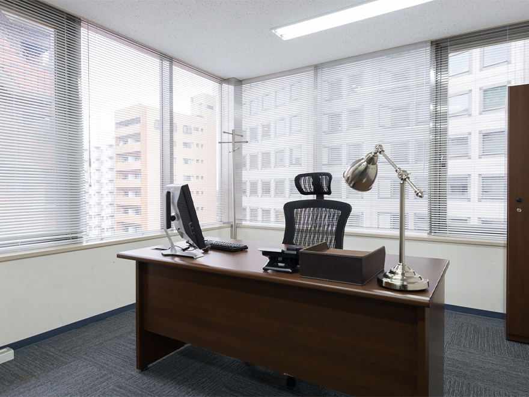
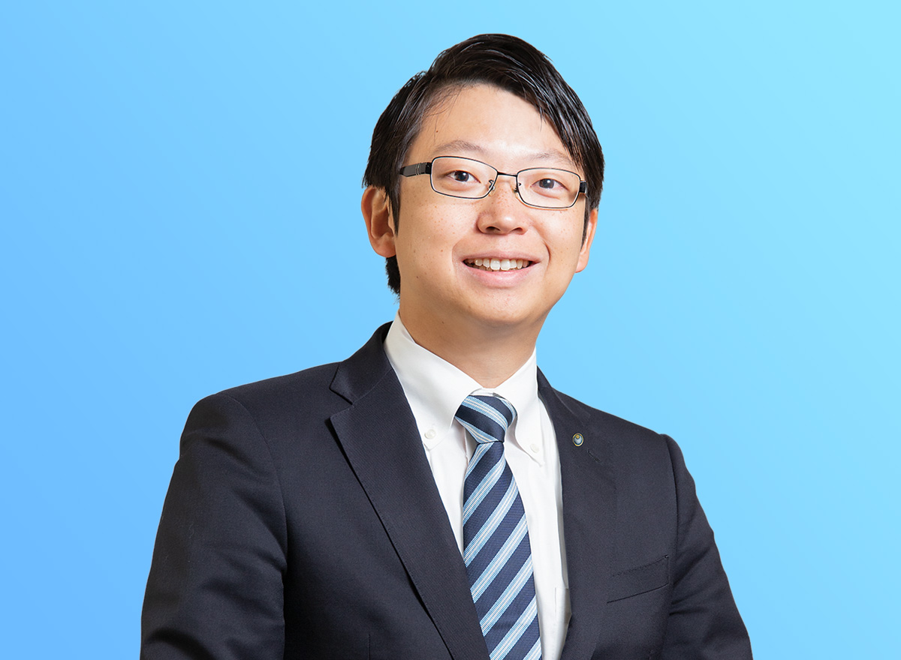

SERVICE 01
会計・税務
迅速かつ正確な仕訳入力・申告作業を行ってまいります。また毎月お客様のもとへご訪問し、経営課題から日々の業務のことまで幅広くご相談に乗ります。会計データの入力および税務申告は、銀行やクレジットカードのデータ取り込み可能な「TKCシステム」により行います。
記帳代行 月額1万5千円～ / 申告作業 3万円～
お客様の事業の成長をサポート。茨城県稲敷郡阿見町から、法人税申告・確定申告・記帳代行・相続のご相談まで、一人ひとりの声に真摯に耳を傾けます。
茨城県稲敷郡阿見町にある「いばらき会計税務事務所」は、県南地域の皆様へ法人税申告、確定申告、記帳代行等の税務業務を提供しています。
お客様一人ひとりの声に真摯に耳を傾け、地元茨城県の企業の皆様の経営を総合的にサポートいたします。
ご相談・お見積もりは無料で承っており、ご面談から打ち合わせまで、責任をもって対応いたします。
その他、個人のお客様の相続のご相談もお任せください。


いばらき会計税務事務所代表の公認会計士・税理士の中山和弘です。生まれも茨城、育ちも茨城、大学も茨城の筑波大学で学んでまいりました。
「PwCあらた監査法人」で大規模法人の会計監査に従事していましたが、地元茨城の中小企業のサポートをしたいという思いが大きくなり、Uターン。茨城に戻ってからは、地元企業の現状をさまざまな会計事務所で知りたいと税理士事務所に2か所勤務し、その後独立・開業しました。
「親切・丁寧」をモットーに、お客様の声にじっくり耳を傾け、経営課題に共に悩み、そして解決策を提案しております。お客様からは「ここまでやってくれるのか」「むしろやりすぎではないか」と逆に心配してくださるなど、ありがたいお言葉をいただいております。
これは、お客様との面談から打ち合わせまで、代表の中山和弘が責任をもってお手伝いさせていただいている結果だと思っています。これからもお客様に安心して会社運営を行っていただけるよう、常にチャレンジし続けていきます。
迅速かつ正確な仕訳入力・申告作業を行ってまいります。また毎月お客様のもとへご訪問し、経営課題から日々の業務のことまで幅広くご相談に乗ります。会計データの入力および税務申告は、銀行やクレジットカードのデータ取り込み可能な「TKCシステム」により行います。
事業を運営するうえでは、経営者が会計数値を理解していることが必要です。そのためには自計化により自らの手で仕訳を打ち込むことが重要となります。当事務所ではお客様のよりよい経営のために、自計化支援を行っています。使用するシステムはTKCの「e21まいスター」および「FXシリーズ」となりますが、他会計システムをご利用のお客様もお気軽にご相談ください。
迅速かつ正確な仕訳入力・申告作業を行ってまいります。また毎月お客様のもとへご訪問し、経営課題から日々の業務のことまで幅広くご相談に乗らせていただきます。会計データの入力および税務申告は、銀行やクレジットカードのデータ取り込み可能な「TKCシステム」により行います。
毎月の給与計算、および毎年の年末調整業務などを支援いたします。また、提携先の社会保険労務士とも連携し、雇用に関するさまざまなご相談にもお答えいたします。同業他社の給与水準との比較も行います。
相続では相続税の申告だけでなく事前の対策が重要となります。当事務所ではお客様と親身に話し合い、節税対策、申告業務、さらには相続後の資産の運用方法まで幅広く対応させていただきます。また弁護士、司法書士、保険代理店、不動産事業者など、各種の専門家と連携してトータルサポートいたします。
当事務所では会計・税務業務だけでなく、「＋α」の価値をお客様に提供します。具体的には、同業他社との財務数値の比較による財務数値の客観的な分析、借入の際に必要となる事業計画書や税務署などへの各種届出書の作成支援、保険商品を利用した節税策に関するアドバイスなどを行います。また、身近な例ではPCの使い方や書類の整理といった日々の業務についてもご相談を受け付けております。「こんなこと聞いてもいいかな？」といったことも含め、お気軽にご相談ください！
| 名称 | いばらき会計税務事務所 |
|---|---|
| 代表者 | 中山 和弘 |
| 所在地 | 〒300-0332 茨城県稲敷郡阿見町中央4丁目8-19 ウイングテナント中央2F |
| 電話番号 | 029-846-0706 |
| 携帯電話 | 090-5565-8423 |
| FAX番号 | 029-307-8467 |
| 事業内容 | 税務相談、税務申告、記帳代行、給与計算、年末調整、会社法監査 |